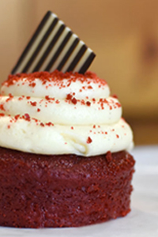
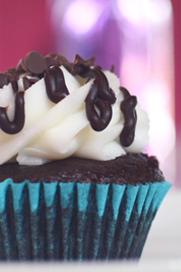

Where are the best desserts in London?
WHERE ARE THE BEST DESSERTS IN
LONDON
?
Something About London Bakerology

SEE MORE PLACES
BEST PLACES
London Bakerology explores the best places of desserts around London, Ontario. Check out these awesome desserts.
Read More

SEE MORE DESSERTS
UM, YUM
Love dessert but you're not a baker? We provide to find variety of desserts around London; try one, try them all.
Life can always be sweeter.